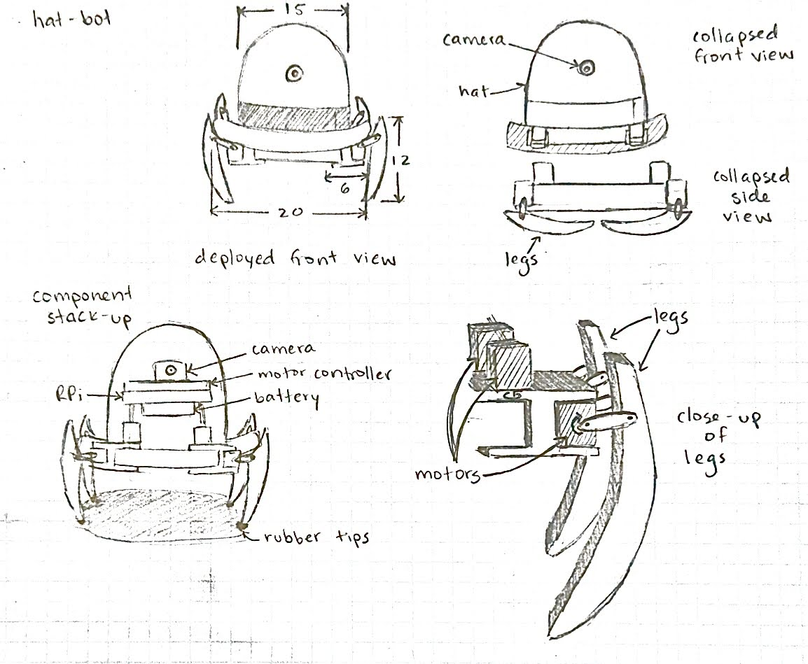
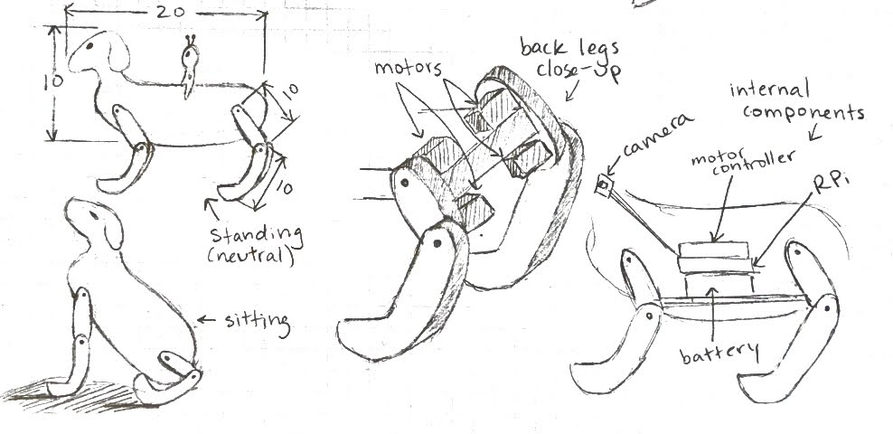
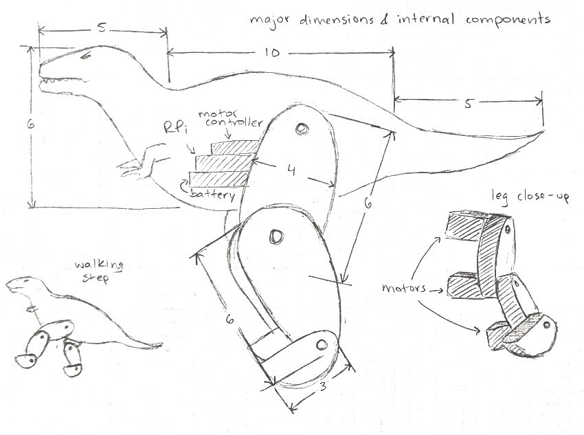
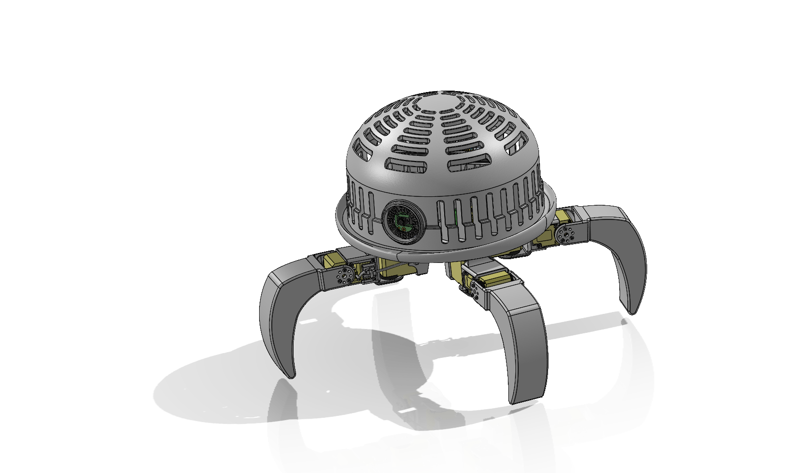

For Robotics Studio, I partnered with a teammate to design, fabricate, and program a four-legged walking robot inspired by DOR-15 from Meet the Robinsons. The embedded video highlights our full design journey and introduces our final robot, RO-81N.
I began the project with early concept sketches to explore leg geometry, motor placement, and internal packaging. We quickly converged on a “hat-bot” form inspired by DOR-15. These sketches established initial dimensions and constraints before moving into CAD.




Over two weeks, we iterated on a complete CAD assembly and refined the mechanical architecture. I focused on mounting and packaging the internal electronics using heat-set inserts, including supports for the battery, power converter, bus linker, and motor joints.
The structure incorporated weight-reduction and heat-dissipation cutouts, quick access to the power switch, and magnetic alignment features for easy removal of the hat shell. All parts were optimized for 3D printing and straightforward assembly.
We transitioned from CAD to fabrication by 3D printing and assembling an initial prototype. This stage required multiple tolerance adjustments and design revisions to improve fit, wiring accessibility, and overall robustness of the assembly.
After validating the electrical system, we soldered the final wiring harness and implemented a walking gait driven by sinusoidal joint trajectories. The chassis was designed to keep the center of mass low, with legs evenly distributed for stability.
While the stride geometry was not optimized purely for speed, the improved balance allowed us to safely increase stride length and cadence during testing.
With the mechanical and electrical design finalized, we completed finishing work to bring personality to the robot. We sanded and spray-painted the legs, wrapped the hat piece in black fabric, and integrated an LED ring to enhance expression.
The final robot achieved a walking speed of 33.4 cm/s while maintaining stable, repeatable motion.